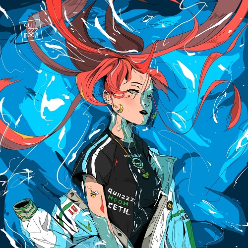

Русский хайперпоп исполнитель, настоящее имя - Виктор Инякин.
Начал набирать популярность весной 2021 года. Трек "Улитка", собравший в себе несколько анекдотов, стал очень популярен в тиктоке.
После этого Квизи начал набирать популярность среди представителей дед инсайд субкультуры.
quizzzmeow записал много треков и с другими хайперпоп исполнителями. Самые популярные из них: lxner и дота-репер shadowraze.

Наиболее популярные треки: "Улитка", "Сети", "Aomine Daiki", "Adaptive Strike".